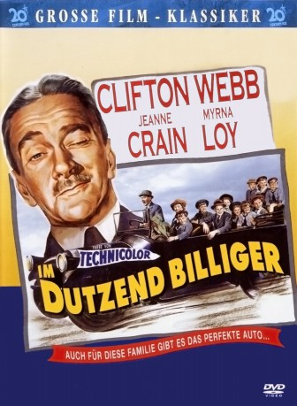
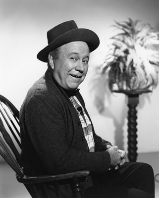
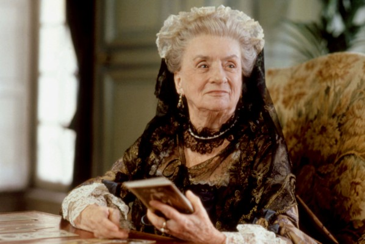
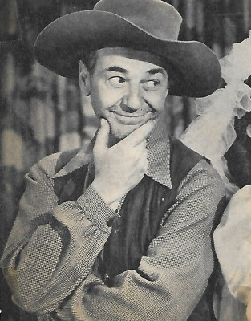

#5559 Im Dutzend billiger
Alternativ: Cheaper by the Dozen
 
 IMDB-Wertung: 7.1 / 10
IMDB-Wertung: 7.1 / 10  Metascore: 0
Metascore: 0 
Frank Gilbreth ist Anfang des 19. Jahrhunderts ein Pionier auf dem Gebiet der Bewegungsrationalisierung und Vater einer zwölfköpfigen Rasselbande. Obwohl er sich beruflich dem Fortschritt verschrieben hat, führt er als Familienoberhaupt ein konservatives Regiment, sehr zum Leidwesen seiner Kinder und besonders seiner Töchter. Doch die wissen, wie man den Vater um den Finger wickeln kann.
Jahr: 1950
Dauer: 82 Minuten
FSK:
Land: USA Studio: Twentieth Century-Fox Film CorporationTonspuren: MPEG2 - ,
Untertitel:
Auflösung: SD (624x464) Größe: 1495 MB
Genre: Drama, Komödie, Familie
Regisseur: Walter Lang
Drehbuch: Jordan Cahan
Soundtrack:
Darsteller:
- Clifton Webb als Frank Bunker Gilbreth
- Jeanne Crain als Ann Gilbreth
- Myrna Loy als Mrs. Lillian Gilbreth
- Betty Lynn als Deborah Lancaster
-  Edgar Buchanan als Dr. Burton
- Barbara Bates als Ernestine Gilbreth
-  Mildred Natwick als Mrs. Mebane
- Sara Allgood als Mrs. Monahan
- Walter Baldwin als Jim Bracken , uncredited
- Benny Bartlett als Joe Scales , uncredited
- Lovyss Bradley als Teacher , uncredited
- Billy Engle als Messenger , uncredited
- Craig Hill als Tom Black , uncredited
- Jimmy Hunt als William Gilbreth , uncredited
- Jane Lee als Teacher , uncredited
- Caryl Lincoln als Teacher , uncredited
- Frank Orth als Higgins , uncredited
- Cynthia Pepper als Young Girl , uncredited
- Jeff Richards als Bit Role , uncredited
-  Syd Saylor als Plumber , uncredited
- Lyn Thomas als Girl on Beach , uncredited
- Betty Barker als Mary Gilbreth , uncredited
- Patti Brady als Martha Gilbreth , uncredited
- Virginia Brissac als Mrs. Benson , uncredited
- Ken Christy als Jed - Delivers Telegram , uncredited
- Denise Courtemarche als Jane - Age 1 , uncredited
- Ted Crane als Bit Role , uncredited
- Dulcie Day als Nurse , uncredited
- Teddy Driver als Dan Gilbreth , uncredited
- Mary Field als Music Teacher , uncredited
- Anita Gegna als Assistant Principal , uncredited
- Vincent Graeff als Mailman with Special Delivery Letter , uncredited
- Eula Guy als Teacher , uncredited
- Ralph Hodges als Bit Role , uncredited
- Roddy McCaskill als Jack Gilbreth , uncredited
- Tom McQuillan als Ticket Taker , uncredited
- Eleanor Moore als Teacher , uncredited
- Carol Nugent als Lillie Gilbreth , uncredited
- Peggy O'Connor als Bit Role , uncredited
- Ramona Oliver als Nurse , uncredited
- Norman Ollestad als Frank Gilbreth Jr. , uncredited
- Joyce Otis als Bit Role , uncredited
- Harmon Stevens als Bit Role , uncredited
- Anthony Sydes als Fred Gilbreth , uncredited
- Tina Thompson als Jane - Age 2 , uncredited
- Evelyn Varden als School Principal , uncredited
- Lillian West als Bit Role , uncredited
- Judy Ann Whaley als Baby Denise , uncredited
Datei: X:\4-Tetralogie(A-K)\Im Dutzend\Im Dutzend billiger (1950, FSK, 624x464).avi seit 17.02.2017
Festplatte: HD Collection-3(N-Z)-6(A-Z)
 Es gibt insgesamt 7 Filme in der Gruppe '4-Tetralogie(A-K)\Im Dutzend'
Es gibt insgesamt 7 Filme in der Gruppe '4-Tetralogie(A-K)\Im Dutzend'